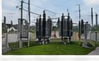

Experience across distribution networks and mission-critical infrastructure.
Powertec's capability has developed across UK electricity distribution, major electrical infrastructure and current European hyperscale data centre commissioning.

ELECTRICITY DISTRIBUTION
Extensive experience within UK DNO environments across overhead and underground High Voltage distribution networks.
- Network operations and switching
- Overhead and underground systems
- Substations and distribution plant
- Construction and refurbishment
- Maintenance, fault response and restoration
- Commissioning and operational safety

DATA CENTRES & CRITICAL INFRASTRUCTURE
Current 22kV SAP and HV operational experience within European hyperscale data centre commissioning.
- 22kV operational control and switching
- Siemens NXAIR switchgear and RMU interfaces
- 22kV/400V transformer systems
- Safe system configuration for testing and commissioning
- Pre-energisation inspections and walkdowns
- Coordination with client, principal contractor and specialist trade teams

MAJOR INFRASTRUCTURE
Background includes electrical building services, project engineering, project management and High Voltage distribution infrastructure.
- Electrical building services
- Project engineering and management
- HV distribution systems
- Construction interfaces
- Commissioning and energisation
- Operational control and handover
22kV Senior Authorised Person — European hyperscale data centre.
Current responsibilities include operational control and switching of 22kV systems, safety documentation, isolation and earthing, safe working arrangements, support for commissioning and test activities, pre-energisation inspection, controlled energisation and coordination across multiple project disciplines.